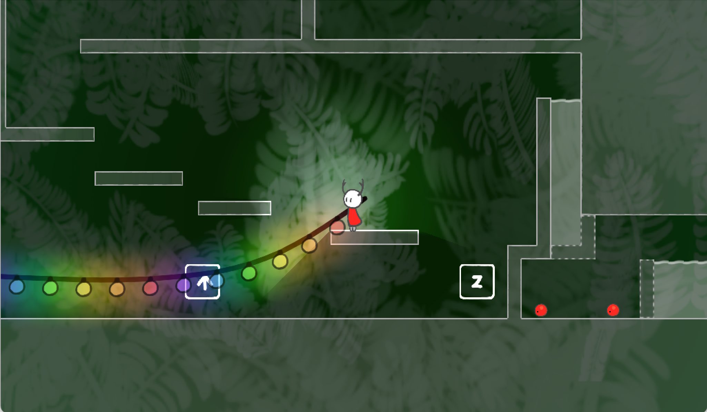
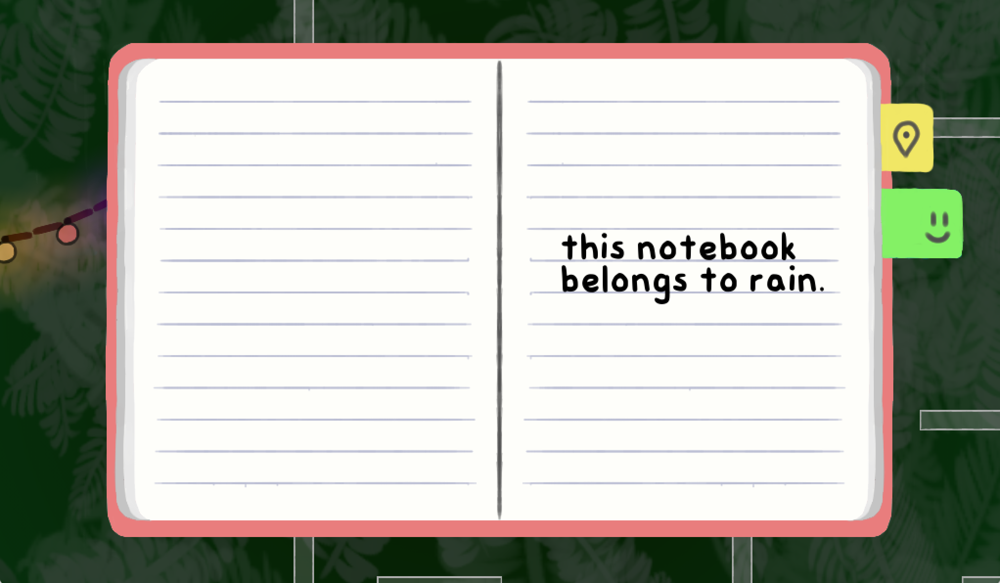

so. a platformer! it's a bit more adventure than platformer, but it's a platformer all the same.
inspired by many games such as treize, hollow knight, celeste, the other uncompleted metroidvania, night in the woods, and a gmtk theme, this is estimated to be released hopefully by the end of 2022. it's not supposed to be That long of a project,,,

there's a github with many things! • 3.8.2021
all the newest updates and snapshots can be found at the github so check that for latest releases! :D
there's been a few since the last update here. cool beans.
[v0.0.1] wow i am an impatient shit • 24.7.2021
a small patch for the previous beta, with a few suggestions implemented :)
controls: pretty much the same as hollow knight, aka left/right to move, z to jump, up arrow to pick up, escape to quit (should be all explained in the game hopefully it's clear)
tab to open notebook, and then up/down left/right to navigate. there are currently only two pages and the bottom tab is blank
move around and pick up berries (yea that's what the small red things are)
two rooms and water
the piece of paper you pick up adds to the notebook
things that don't work yet:
options screen
the third room is empty, and there's only two completed rooms
currently no way to spend/use the berries
look out for:
ease of control? do they feel good
soon i'll add like when you pick up something it tells you what it is i guess
any glitches/bugs?
what do you find cool and like? what's annoying/terrible?

drop me a message on discord at bucketfish#3961 and tell me everything 👍. thank you!